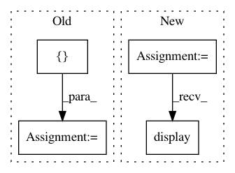

aa9810a87a4d16383cfb86531854a3cf11c2cca2,doc/examples/sfm_tracking.py,,,#,17
Before Change
list(move_streamlines(plot_streamlines, inv(t1_aff))),
line_colors(streamlines))
vol_actor = fvtk.slicer(t1_data, voxsz=(1.0, 1.0, 1.0), plane_i=[40],
plane_j=None, plane_k=[35], outline=False)
ren = fvtk.ren()
fvtk.add(ren, streamlines_actor)
fvtk.add(ren, vol_actor)
After Change
vol_actor = fvtk.slicer(t1_data)
vol_actor.display(40, None, None)
vol_actor2 = vol_actor.copy()
vol_actor2.display(None, None, 35)
ren = fvtk.ren()
fvtk.add(ren, streamlines_actor)
fvtk.add(ren, vol_actor)
In pattern: SUPERPATTERN
Frequency: 3
Non-data size: 4
Instances
Project Name: nipy/dipy
Commit Name: aa9810a87a4d16383cfb86531854a3cf11c2cca2
Time: 2015-10-13
Author: garyfallidis@gmail.com
File Name: doc/examples/sfm_tracking.py
Class Name:
Method Name:
Project Name: janfreyberg/superintendent
Commit Name: b5888bf90d54fc92c0b26382642442a65d8fb521
Time: 2018-10-24
Author: jan.freyberg@gmail.com
File Name: superintendent/base.py
Class Name: Labeller
Method Name: _render_processing
Project Name: nipy/dipy
Commit Name: 232aeb2c0e06e642b6f0af65d9bddcf6ae16d5ce
Time: 2015-10-13
Author: garyfallidis@gmail.com
File Name: doc/examples/streamline_tools.py
Class Name:
Method Name: